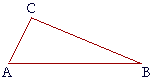

Proposizione I.19
Proposition I.19 is the converse of Prop. I.18. Euclid uses contradiction to prove it. Note the similarity to the proof of Prop. I.6, the converse of Pons Asinorum
Proposizione I.19 - In any triangle, the longer side subtends the larger angle.
Proof - Let ΔABC be a triangle with ∠BAC > ∠ABC, I say that the side CB is greater than the side AC. Suppose the result is false. thus, either AC equals CB or it is less than it. By Pons Asinorum, CB ≌ CA implies ∠BAC ≌ ∠ABC so it must be that CB < AC. In that case, though, Prop. I.18 ensures that ∠BAC < ∠ABC, a contradiction.□